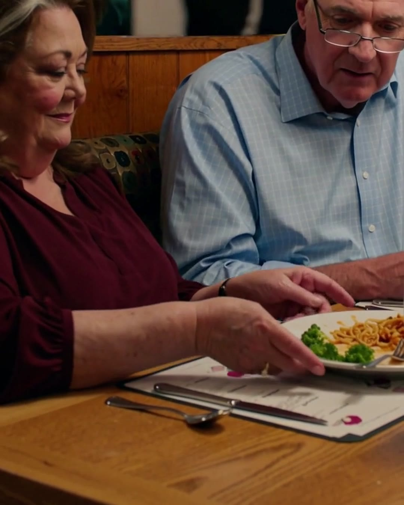
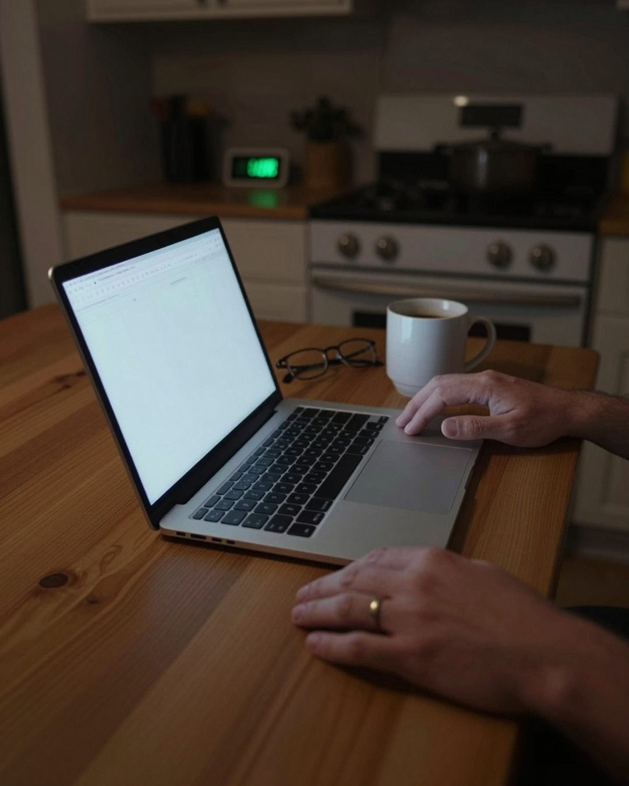
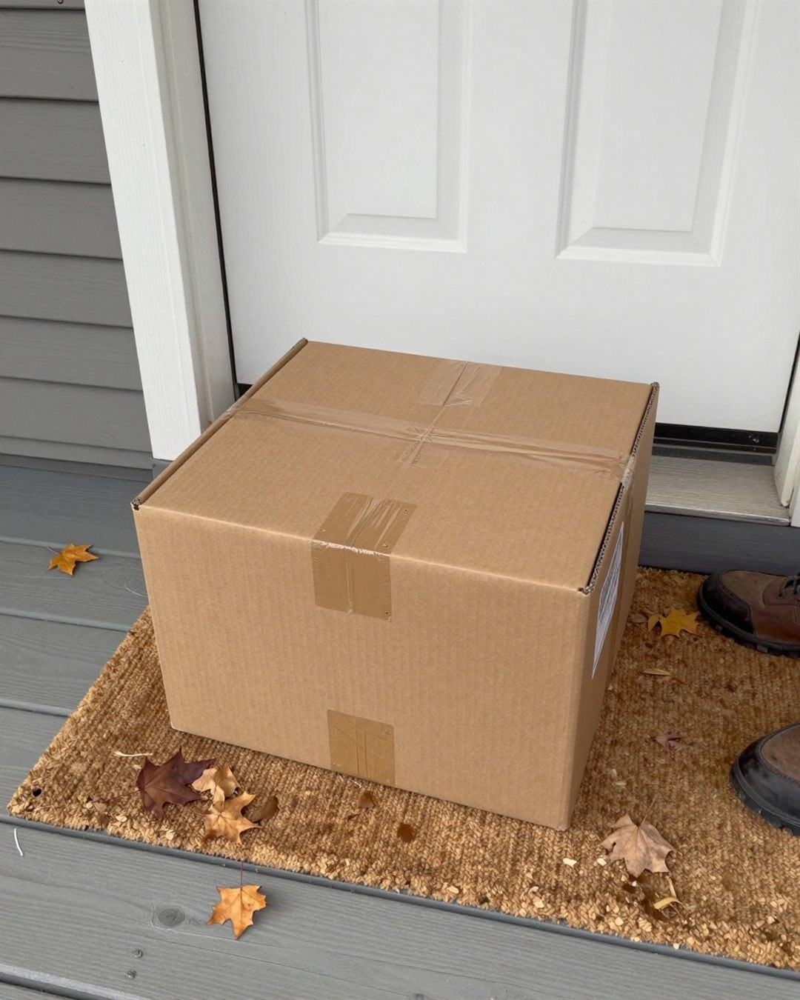
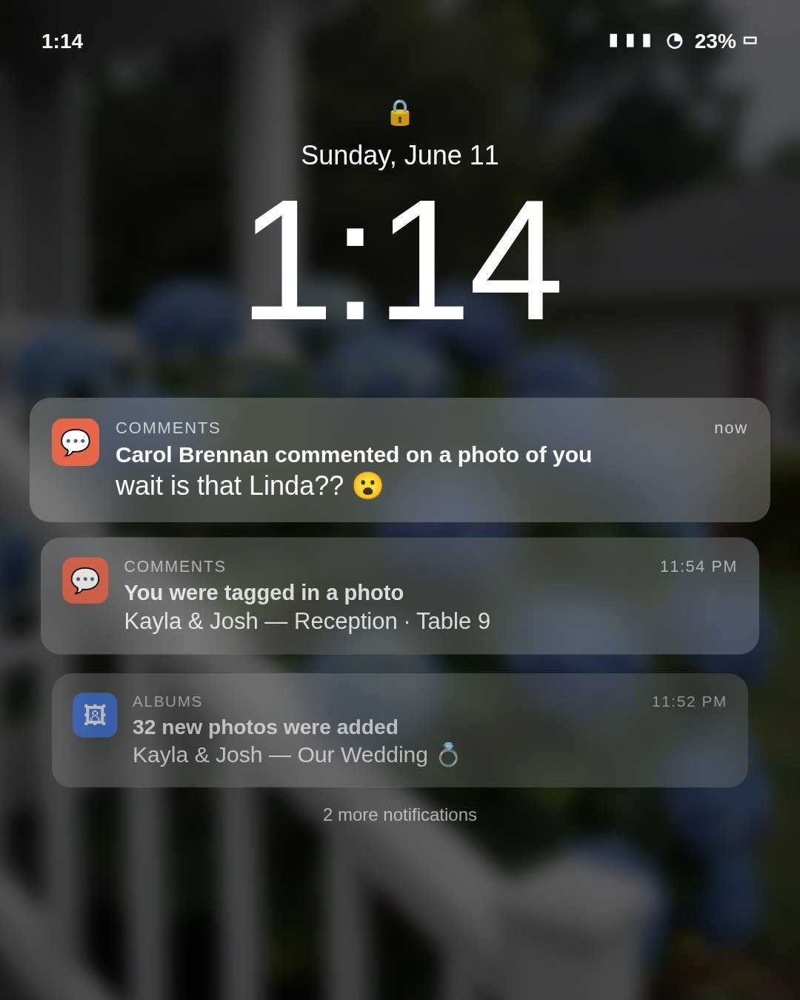

My wife pushed away half a plate of pasta. In 26 years she has never left a bite. I thought she was sick.
I googled her symptoms at 2 a.m. I counted her pills. Eleven days later a box showed up on our porch with her name on it.
Friday, October 9 · 8:47 p.m.
I sat in my car in my own driveway for eleven minutes with the engine off.
The porch light was on. Through the kitchen window I could see my wife putting a white to-go box in the refrigerator.
That box was the reason I couldn't make myself go inside.
My wife had started leaving food on her plate.
Twenty-six years, and Linda has never left a bite. Not at our wedding. Not with the flu.
I propped my phone on the dashboard and said it out loud, to hear if it sounded as bad as it felt.
It sounded worse.
I thought she was sick.
I'm not a writer. I sell heating and cooling parts. I'm putting this down because I got every piece of it wrong, right up until a box showed up on our porch with her name on it.
It started an hour earlier, with a plate of rigatoni.
Booth 14
Same restaurant every Friday since our daughter Emily was nine. Same booth when we can get it.
Linda orders the baked rigatoni. She finishes hers, then "helps" with mine. I have been guarding my garlic bread since 1999.
That night she ate about half. Then she set her fork down, put two fingers on the rim of the plate and slid it to the edge of the table.
Calm. Like she did it every week.

See what was in the box ▸Our waitress, Dot, has known us nineteen years. She stopped dead. "Something wrong with it, hon?"
"No," Linda said. "It was perfect."
Dot looked at me. I looked at Dot.
"Lin," I said. "Are you okay?"
She smiled. A smile like she'd already read the last page of something.
"I've never been better."
Here is what that sentence means in my family. My father said "never better" every Sunday for a whole spring.
I'm not going to finish that story. I'll just say I paid the check with my hands shaking, and that it wasn't the first plate.
Three weeks of little things
Half a grilled cheese, left on the counter on a Tuesday.
The lemon bars. She came home from book club carrying a paper plate of them. Home. For nine years those lemon bars have not survived the parking lot. They sat under foil until Thursday.
And the refrigerator door.
I can hear it from my chair in the den. Quarter past nine, every night of our marriage, give or take: the door, the light, a drawer, a fork. It was just a sound our house made.
Then one week in September, the house stopped making it.
Already guessed what was in the box? The two minutes she did are here ▸
That Friday she fell asleep in about four minutes. I didn't. At 2:07 in the morning I went downstairs and did something I'm not proud of.
2:07 a.m.
I opened the laptop at the kitchen table and typed: wife suddenly not finishing meals.

Skip to what it really was ▸Every result was a word nobody wants to read at two in the morning about the person asleep upstairs.
Then I went into our bathroom in my socks and opened her pill box. The plastic one by the sink, Sunday through Saturday.
Vitamin D. The allergy one. Nothing new. Nothing missing.
That scared me more. If it wasn't in the pill box, it was something she was keeping from me on purpose.
At 3:30 I was back at the table with my thumb over Emily's name. She's twenty-eight, with a job and a four-year-old.
And what was I going to say? Your mother didn't finish her rigatoni?
I put the phone face down and watched her instead. Eleven days. On the eleventh I came home at noon for a tape measure, and there was a box on the porch.
The box

See what was inside ▸Plain cardboard, the size of a toaster. A return address I had never heard of.
For the record, I do not open my wife's mail.
I set it in the middle of the kitchen table and sat down across from it. I told the office I had a thing.
I had a box.
I sat there three hours and twenty minutes, thinking about my father.
At twenty past three her car pulled in. She came through the door with two grocery bags, saw the box, and then saw me.
She set the bags down very slowly.
"You'd better sit down," she said.
"Lin. I've been sitting since noon."
She didn't laugh. She took an envelope out of her purse, soft at the corners.
I was braced for a lab report. What she slid across the table was arithmetic.
$4,312
 See what finally worked ▸
See what finally worked ▸The points app, $239. The meal-kit boxes, $1,104. The gym, $1,080, eleven visits. And $1,889 of shakes, "metabolism" capsules, a 21-day reset and an online coach.
I knew every one. I carried those meal-kit boxes to the curb myself.
"I added it up in the grocery store parking lot," she said. "I cried so hard a woman knocked on my window."
I asked why she hadn't told me about the new thing. Whatever was in that box.
"Because I couldn't stand in this kitchen one more time and say 'this time is different,' and watch you be nice about it."
Then she told me about the voice. I had lived beside it for twenty-six years and never once heard it.
The voice I never heard
9:12 p.m. She knows the minute because the stove clock is right there.
Not hunger, she said. A voice. There's cake left. You were good all day. Just a sliver. Nobody will know.
Every night. She'd argue with it for an hour, and lose.
That was the sound I'd heard from my chair. I thought my wife liked dessert.
Her friend Denise had a name for it: food noise. Denise is the lemon bar friend, nine years of "I will if you will." Denise went first, and she told Linda:
"It was never willpower, Lin. It's the noise. Something finally turned the noise down."
So the refrigerator door hadn't stopped because my wife was sick. It stopped because, for the first time since I've known her, nobody was talking to her at 9:12.
If there is a 9 p.m. voice in your house, take the same 2-minute questionnaire Linda did ▸
She kept going. She told me about my own sister.

That was the week our bathroom scale turned up in the garage, wrapped in a beach towel. "Batteries are dead," she said. And the week she stopped being in pictures. "Let me take it!" At Emily's graduation, the only sign of her is a shadow on the walkway.

So I asked her what I'd wanted to ask for three years.
"Is this why you won't let me take your picture anymore?"
She nodded. She couldn't talk. Neither could I, so I asked for the paperwork. Somebody was robbing my wife again, and I meant to prove it before dinner.
I read all of it. Twice.
I read spec sheets for a living. I went looking for the catch the way I'd look for a leak.
Here is what it is. A weight program you do from your phone. No gym. No meal boxes. No points. No weigh-ins in front of strangers.
She had answered a few honest questions: about herself, her history, everything she'd already tried. Two minutes, at this same table, while I was at work.
Not everyone gets a yes. If it isn't a fit, they say so straight away and you pay nothing. An outfit that says yes to everybody is selling something. This one doesn't.
Linda got a yes. Her first box was at our door the next day.
There's an app with a plan for each day and a food log. There's a real person she can message any time, day or night. And there's a body scanner that shows fat and muscle as two separate lines, every week.
Then the part I was sure would sink it: the money. $199 a month on the three-month plan. Regular price $299. Cancel anytime, no fees. A 90-day money-back guarantee. I looked for the trapdoor. There wasn't one.
I got out my own pencil. $4,312 over thirty-six months is about $120 a month. We'd been paying that for three years, for recycling.
I closed the laptop and told her the only thing I had: "I can't find anything wrong with it."
From me, that's a love letter.
The same two minutes Linda did at our kitchen table: see if you qualify ▸
What I see from my chair
Quarter past nine comes and goes. The refrigerator door stays shut.
She gets down on the floor with Owen and his trucks, and gets back up without the coffee table.
Every Monday before coffee I hear her step on that scanner. Then she comes and shows me the two lines, like a kid with a report card. Some weeks the weight hardly moves, and the lines show her why. I don't fully understand the chart. I understand her face.
 Get the free scanner ▸
Get the free scanner ▸Today is Black Friday, and that scanner ($350 value) is free with every plan. Check if you qualify before it ends ▸
Last Friday we were back in booth 14. She ate half the rigatoni and slid the plate away with two fingers.
Dot opened her mouth.
"She's never been better," I said. Then I ate my garlic bread in peace for the first time since 1999.
But that isn't what I sat down to write. What I sat down to write happened yesterday.
Yesterday
Thanksgiving. Fourteen people, one oven.
After the pie, Emily held up her phone. "Everybody in. Family picture."
I turned to hand Linda my phone, out of habit.
She wasn't beside me.
She was already in the middle of all of them, with Owen on her hip.
"Mark," she said. "Get in here. Somebody else can take it."
My sister Carol took it. I thought that was fair.
Last night I sat in the driveway again. Same car, engine off. I changed my lock screen. Three years of a shadow on a walkway, and now it's her face.
This time I went inside.
See if you qualify (2 minutes) ▸
If there's a voice in your house
Maybe it's yours. Maybe you're the one in the chair.
I lost eleven days to the worst thoughts of my life. It's two minutes on a phone, and a no costs nothing. This is everything I checked, on one page:
- 2-minute questionnaire from your phone: you're told straight away if you're a fit
- Everything delivered to your door the next day
- App with a daily plan · food log · a real person to message any time
- $199/month on the 3-month plan (regular $299)
- Cancel anytime, no fees · 90-day money-back guarantee
- Black Friday: the body scanner ($350 value) is free with every plan